Hørdum (Bildstein)
Höhe: 125 cm
Breite: 70 cm
Dicke: 40 cm


19 - Hørdum - Letztes Update 05.08.2025
Listennummer : DK NJy 30 (obwohl ohne Inschrift)
| Navidaten: 56.84422 8.512917752 oder: Snedsted, Thorsvej 25a |
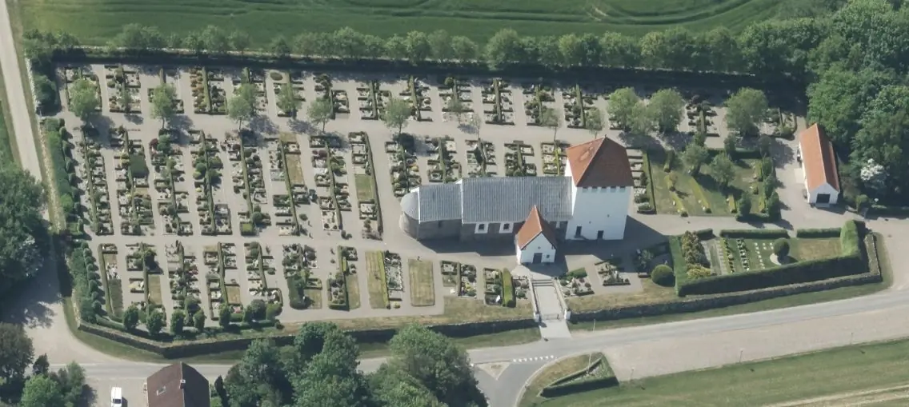
Dies ist ein Luftfoto vom 01.06.2023 - von Skråfoto - Lizenz: CC BY 4.0 - das die Kirche von Hørdum zeigt. Skråfoto ist eine Webanwendung, die von Klimadatastyrelsen weltweit kostenlos bereitgestellt wird. Die Aufnahmen werden seit 2017 alle zwei Jahre erneuert und neben einer Senkrechtaufnahme wird ein Schrägbild aus jeder Himmelsrichtung angeboten, das man über eine Adresssuche aufrufen kann.
Im Rahmen meiner 2022er Jütland Wikingertour nahm ich mir mal wieder die Zeit und war am Mittwoch, 01.06.2022, vor Ort. Dabei habe ich diese Fotografien gemacht.
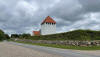 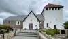 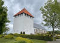 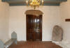 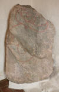 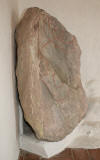 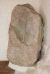 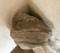 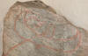 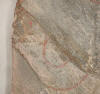


Die beiden (schlechten) Fotos im linken Frame sind meinen Aufzeichnungen nach vom 21.08.1990. Ich war bereits im Sommer 1988 und dann nochmals im Sommer 1991 an der Kirche. Immerhin war das aber jetzt schon mehr als 30 Jahre her!
05.03.2019 - Über die Internet Datenbank zu den dänischen Runensteinen - www.runer.ku.dk - fand ich erst heute einen bemerkenswerten Hinweis zu dem Bildstein von Hørdum. Wie ich feststellen konnte, wurden offenbar nach und nach Literaturhinweise in alle Seiten eingepflegt.
Bereits 1993 berichtete demnach Peter Vang Petersen in einem Artikel in der dänischen Magazin SKALK - 1993 - Ausgabe Nr. 6 - S. 28, über seine Wahrnehmung in Bezug auf die Zeichnung der Midgardschlange bei Schräglicht. Seiner Auffassung nach ist der Kopf der Schlange deutlich zu sehen. Ich habe nach Einsicht in den Artikel (als Abbonent der Zeitschrift SKALK hat man über deren Online Archiv Zugriff auf jedes jemals erschienene Exemplar!) mein Foto mal entsprechend eingefärbt. Sehr gut denkbar, dass die Ritzung wirklich so angedacht war!

Auf der Webseite der dänischen Runendatenbank findet sich ein sw Bild dieser Schlangenzeichnung und von Erik Moltke (*04.04.1901 - 19.10.1984, Runologe, Historiker - link-LIVES)
 Bildquelle: Scan von Buchumschlag "Runerne i Danmark og ders
oprindelse" - Erik Moltke - 1976 - Lizenz:
CC-BY-SA
Bildquelle: Scan von Buchumschlag "Runerne i Danmark og ders
oprindelse" - Erik Moltke - 1976 - Lizenz:
CC-BY-SA
ein erstes Foto nach der Entdeckung.
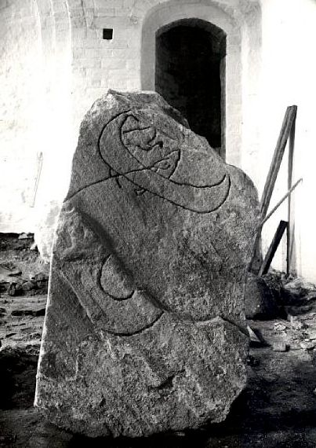
Lizenz: CC BY-SA 4.0Bei Bauarbeiten für die Fundamentgräben des jetzigen Westturms der Kirche von Hørdum, die 1954 durchgeführt wurden, fanden die Handwerker einen Stein der in spätgotischer Zeit als Schwellenstein einer Treppentür gedient hatte. Die Überraschung war groß, als man den Stein umdrehte, denn es zeigte sich eine prächtige Zeichnung, die von einem kundigen Mann in der Wikingerzeit geritzt worden war.
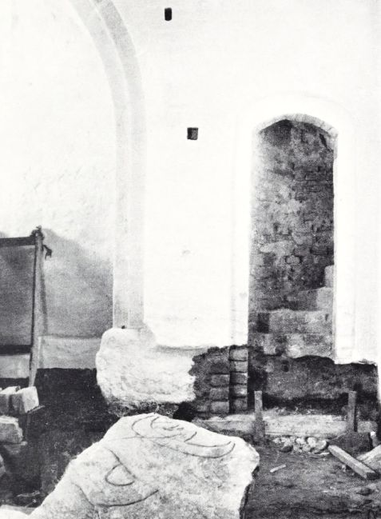
Der Hørdum Bildstein "in situ" (nachdem er umgedreht worden war) nach seiner Entdeckung (Fotograf unbekannt - aus dem Artikel Thors fiskeri - in: Fra Nationalmuseets Arbejdsmark - 1955 - S. 99 - S. 102 in der pdf-Datei) von Johannes Brøndsted (*05.10.1890 - 16.08.1965, dänischer Archäologe, Prähistoriker und Direktor des Dänischen Nationalmuseums von 1951 bis 1960 - link-LIVES).
 Bildquelle:
Wikipedia
- Lizenz:
CC-BY-SA
Bildquelle:
Wikipedia
- Lizenz:
CC-BY-SA
Durch den Architekten Poul Hansen (*05.10.1918 - 17.05.1987 - Bildnis Grabstein) aus Thisted,
Bildquelle: Lokalhistorisk Arkiv - Thisted Kommune - Erlaubnis zur Nutzung am 27.01.2025 erteilt bekommern - Tusind tak!
war am 19.08.1954 telefonisch gegenüber dem Nationalmuseum in Kopenhagen Meldung über den glücklichen Fund gemacht worden. Im Herbst 1954 erfolgte eine eingehende Untersuchung durch den Runologen Erik Moltke (*04.04.1901 - 19.10.1984, Runologe, Historiker - link-LIVES)
Bildquelle: Scan von Buchumschlag "Runerne i Danmark og ders
oprindelse" - Erik Moltke - 1976 - Lizenz:
CC-BY-SA
der auch verschiedene Fotos ohne und mit nachgezogenen Linien der Ritzung anfertigte. Im Januar/Februar 1955 wurde durch das Nationalmuseum in Person von Olaf Heymann Olsen (*07.06.1928 17.11.2015)
Bildquelle: Wikipedia - Lizenz: CC-BY-SA
in der Kirche eine Ausgrabung vorgenommen.
Von Lennart Larsen (*1924 - 1991), Fotograf des Nationalmuseum in Kopenhagen, stammt diese Fotografie, die in der digitalen Sammlung des dänischen Nationalmuseums abgerufen werden kann. Das Aufnahmedatum ist unbekannt.
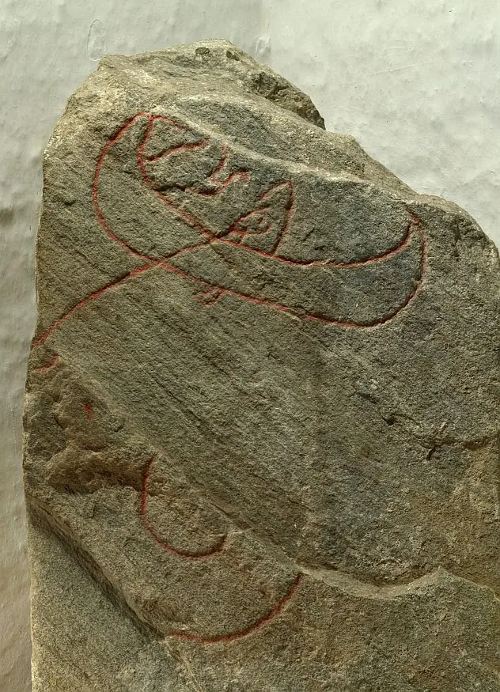
Lizenz: CC BY-SA 4.0Auf dem Bildstein, der heute in der Vorhalle der Hørdumer Kirche aufgestellt ist, sieht man die Darstellung einer alten Sage.
Sie zeigt den Gott Thor zusammen mit dem Riesen Hymir beim Angeln nach der Midgardschlange in einem Boot auf dem Meer. Die Midgardschlange war das große Ungeheuer in der Nordischen Mythologie, und es hatte so große Macht, dass es die ganze Welt mit seinem Körper umspannte.Der Sage nach verließ Thor eines Tages Midgard als kleiner Junge und besuchte gegen Abend den Riesen Hymir. Hier durfte er die Nacht über bleiben. Ganz früh morgens am nächsten Tag stand Hymir auf und kleidete sich an, um aufs Meer zum Fischen zu fahren. Thor sprang auf, als er entdeckte was Hymir vorhatte und bat ihn mitkommen zu dürfen. Hymir war nicht sehr begeistert, da Thor viel zu klein sei und helfen würde er nicht viel können. Er sagte auch zu Thor: Du wirst nur frieren, wenn wir draußen bleiben. Aber Thor antwortete, dass der Riese gerne weit hinaus rudern könne und wurde so zornig auf den Riesen, dass er ihn beinahe mit dem Hammer erschlagen hätte. Er tat es jedoch nicht, da er seine Kräfte an anderer Stelle gebrauchen wollte. Danach fragte er Hymir was sie als Köder brauchen würden. Hierzu antwortete Hymir, dass er sich selbst etwas beschaffen müsse. Thor drehte sich um und entdeckte eine Herde Ochsen, die Hymir gehörte. Er riss den Kopf vom größten Ochsen, der Himmelsbrüller hieß, und nahm ihn mit ans Meer.
Hier hatte Hymir bereits das Boot von Land gestoßen. Thor ging an Bord, setzte sich, nahm ein Paar Ruder und begann zu rudern. Hymir selbst ruderte im vorderen Teil und es ging rasch vorwärts. Hymir sagte Bescheid, als sie an seinen Fischplatz kamen, an dem er meistens nach Flachfischen fing. Aber Thor antwortete, dass er noch viel weiter rauswolle und sie ruderten ein Stück weiter. Dann meinte Hymir aber, sie wären weit genug draußen, wenn sie sich nicht mit der Midgardschlange anlegen wollten. Thor antwortete, dass er noch ein Stück weiter rauswolle und er ruderte weiter, auch wenn es Hymir nicht gerne sah. Nachdem Thor die Ruder von sich gelegt hatte, machte er sich eine sehr starke Angelschnur uns setzte einen gewaltigen Haken daran. Dann setzte er den Ochsenkopf auf den Haken und warf ihn über Bord. Der Haken sauste nun auf den Grund. Die Midgardschlange gähnte über den Ochsenkopf und der Haken setzte sich in ihrem Gaumen fest. Als sie dies merkte, zog sie so hart, dass Thors Fäuste gegen die Reling dröhnten. Da wurde Thor wütend. Mit Hilfe seiner Asastärke stemmte er sich dagegen, so dass seine beiden Füße durch das Boot auf den Meeresgrund stießen. Danach zog er das Tier bis zur Reling hinauf und keiner hat jemals eine schrecklichere Szene erlebt, wie die, als Thor das Tier anstarrte und dieses ihn von unten her anstierte und Gift und Galle speite. Man erzählt, dass der Riese Hymir blas und erschreckt aussah, als er das Tier erblickte und als er sah, dass das Meer ins Boot und wieder herausschwappte. Im selben Augenblick als Thor den Hammer ergriff um die Midgardschlange zu erschlagen, nahm der Riese ein Messer und durchschnitt die Schnur gegen die Bootseite, so dass die Midgardschlange zurück ins Meer sank. Thor aber warf den Hammer hinterher und man erzählt, er zerschmetterte den Kopf des Tieres unten in der Tiefe. Dann schlug Thor den Hymir mit der Faust eine aufs Ohr, so dass dieser über Bord stürzte. Thor selbst watete an Land.
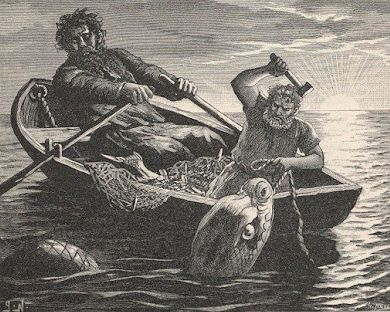
Bildquelle: Nils Fredrik Sander's - 1893 - Schwedische Ausgabe der Poetic Edda - Lizenz: Public Domain
Die Geschichte war natürlich bei den Wikingern sehr beliebt und kam noch nach ihrer Zeit in der nordischen Dichtkunst vor, so in dem Eddalied Hymiskvida und in einer sehr farbenreichen Neudichtung in der jüngeren Edda. Der Isländer Snorri Sturluson war Autor der letzteren und schrieb sein Skaldenlied um 1220.
Ein kurzer Auszug aus dessen Skaldenlied zu Thors Fischzug soll hier wiedergegeben werden:
An die Angel steckte der Irdischen Schützer¹
Als Köder den Stierkopf zum Kampfe mit dem Wurm
Gähnend haschte der gottverhasste
Erdumgürter² nach solcher Atzung.
Tapfer zog Thor der gewaltige
Den schimmernden Giftwurm zum Schiffsrand auf.
Das hässlichste Haupt mit dem Hammer er traf,
Das felsenfeste, dem Freunde des Wolfs³
Felsen krachten, Klüfte heulten,
Die alte Erde fuhr ächzend zusammen:
Da senkte sich in die See der Fisch.
¹ = Thor
² = Die um die Erde liegende Midgardschlange
³ = Die Midgardschlange; sie ist der Bruder des Fenriswolfs
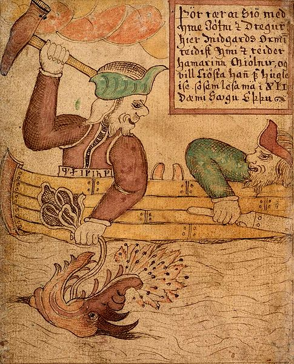
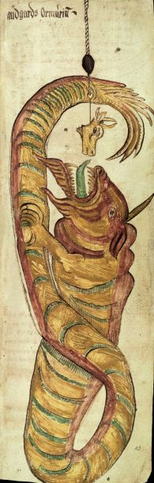
Illustrationen aus isländischen Handschriften zu Thors Fischzug - links: SÁM 66 - Melsteðs-Edda; Island, 1765-1766 - S. 79 v / rechts: AM 738 4to Edda, Eddukvæði, ýmis önnur kvæði o.fl.; Island, 1680, - S. 42 r - Lizenz jeweils: Public Domain
Die Geschichte von "Thors Fischzug" ist noch auf zwei weiteren Steindenkmälern wiedergegeben.
Etwa 40 km südwestlich von Uppsala findet man den Runenstein von Altuna / Uppland / Schweden (U1161) - 195 cm hoher Granitstein - 1918 in unmittelbarer Nähe zum heutigen Aufstellungsort gefunden - wird auf die 2. Hälfte des 11. Jahrhunderts datiert
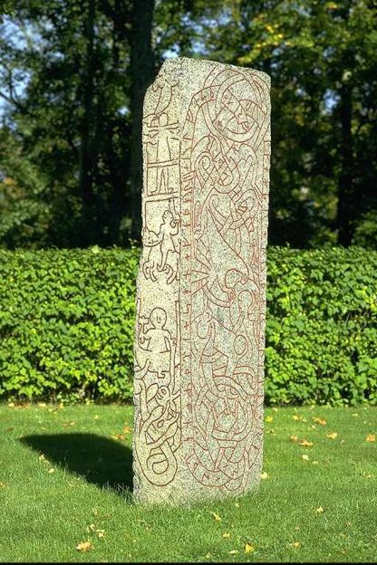
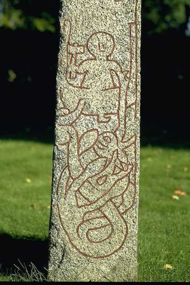
Beide Fotos von 1985 von Bent A. Lundberg - Lizenz: CC BY 2.5
Die als "Gosforth-Kreuz" bekannte Stele - 4,4m hoher roter Sandstein - zeigt mehrere mythologischen Szenene, u.a. diese Darstellung:
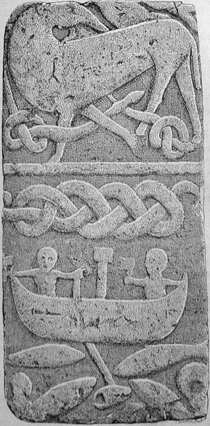
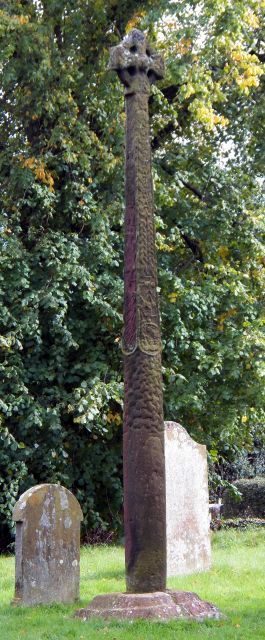
Lizenz: CC-BY-SA - Fotografie: Dougsim
Links: Goðafræði Norðmanna og Íslendinga eftir heimildum. Híð íslenska bókmentafjelag, Reykjavík, 1913 - Seite 63 von Finnur Jónsson (*29.05.1858 - 30.03.1934, isländischer skandinavistischer Mediävist)
 Bildquelle:
Wikipedia - Lizenz:
Public Domain
Bildquelle:
Wikipedia - Lizenz:
Public Domain
Auszug aus Wikipedia: Das Kreuz von Gosforth (englisch Gosforth cross) ist ein angelsächsisches Steinkreuz in Form eines irischen Hochkreuzes in Gosforth in der Grafschaft Cumbria in England. Es ist 4,4 Meter hoch und aus rotem Sandstein. Das Kreuz wurde wahrscheinlich um 920/950 errichtet und ist eines der höchsten bekannten Kunstwerke aus der Zeit vor der normannischen Eroberung Englands. Es wurde 1886 erstmals beschrieben und steht heute weiterhin auf dem Kirchhof der St Marys Church in Gosforth. Eine originalgetreue Kopie steht im Victoria and Albert Museum in London.
Auch wenn der Stein inschriftlos ist finden sich hier Infos:
Die Informationen zu dem Bildstein aus der dänischen Runendatenbank finden sich hier.
In der Datenbank "Fund og Fortidsminder" findet sich dieser Eintrag zu dem Bildstein.
Über diesen Link finden sich zu dem Bildstein Informationen des Forschungsprojektes "Runes" der Akademie der Wissenschaften zu Göttingen.
Auf der Webseite von "1001 fortaellinger om Danmark" findet sich auch eine Eintrag zur Hørdum Kirche mit Infos in dänischer Sprache und einigen Fotos.
Auf der Webseite der Hørdum Kirche ist dieser YouTube Video vom März 2020 verlinkt, mittels dem man durch die Kirche geführt wird, nachdem man zuvor kurz darübergeflogen ist.
Literaturhinweise:
Aufsatz zum Gosforth Stein - George Stephens - in: Aarbøger for nordisk oldkyndighed og historie - 1884 - S. 33ff.
Die Lieder der Edda, von B. Sijmons und Hugo Gering - 1927 - 3. Band: Kommentar, Erste Hälfte: Götterlieder, Kapitel VII: Hymesqviþa, S. 255 ff. (Auflistung zu den verschiedenen Quellen mit der Geschichte zu Thors Fischzug)
Thors fiskeri - Johannes Brøndsted - in: Fra Nationalmuseets arbeijdsmark - 1955 - S. 92-104 (in der pdf-Datei ab S. 95)
Danmarks Billedsten - Autor unbekannt - mit einer Zeichnung von Claus Andersen - in: SKALK - 1968 - Heft 3 - S. 32
Bid - Peter Vang Petersen - in: SKALK - 1993 - Ausgabe Nr. 6 - S. 28
Christus, Thor und die Midgardschlange -
Otto
Gschwantler - in:
Festschrift für Otto Höfler zum 65. Geburtstag. Hrsg. Helmut Birkhan und Otto
Gschwantler. Bd. I, Wien 1968, S. 145168. - Auch in: Heldensage und
Bekehrungsgeschichte: gesammelte Aufsätze zur germanischen Heldensage in der
Historiographie des Mittelalters und zur Bekehrungsgeschichte Skandinaviens
Gschwantler, Otto. Simek, Rudolf [Publ.].
Böse Blicke, Gift und Feuer - Drachenkämpfe am Beispiel der isländischen Gǫngu-Hrólfs saga sowie von Thors Fischzug - Friederike Richter - In: helden. heroes. héros. E-Journal zu Kulturen des Heroischen. Sonderband Faszinosum Antiheld (3:1), 123134.